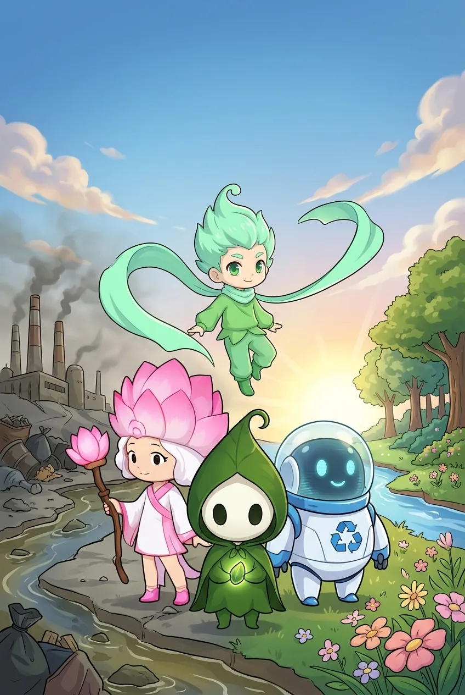
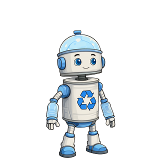
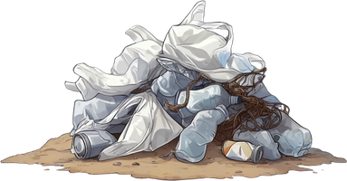
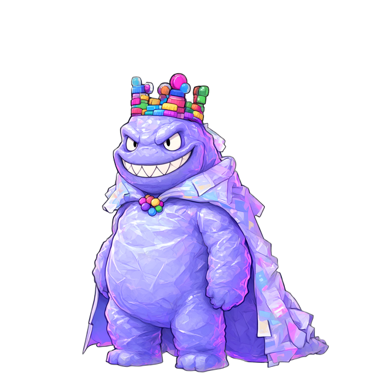
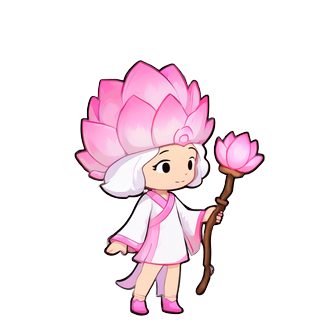
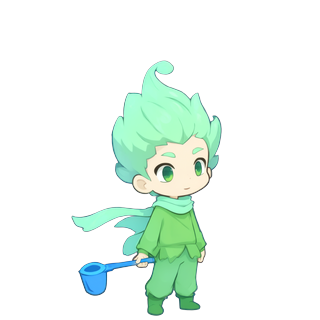

3,1 triệu tấn
rác nhựa Việt Nam thải ra mỗi năm, ít nhất 10% trôi ra biển.
Nguồn: Ngân hàng Thế giới (2022)Vào vai Mầm, Vệ Binh Xanh cuối cùng của thế giới Xanh Lam. Dọn rác, phân loại đúng theo Luật Bảo vệ môi trường 2020, trồng lại rừng ngập mặn và giải cứu các tinh linh. Mỗi việc trong game là một việc có thật.

Trước khi bạn cầm phím, đây là chuyện đã xảy ra với thế giới Xanh Lam. Cuộn xuống để đọc.
Đã từng có một thế giới tràn ngập màu xanh, tên là Xanh Lam. Ở đó có rừng, có sông, có những bãi biển trắng và rạn san hô rực rỡ. Thiên nhiên và con người sống hài hòa.

Rồi người ta làm ra nhiều thứ hơn mức thiên nhiên kịp nhận lại. Chai nhựa, túi nilon, lưới cũ dùng một lần rồi bỏ. Rác phủ kín bờ biển.
Sông chuyển màu đen. Từ những đống rác không ai phân loại, một thứ đáng sợ mọc lên: Sương Độc. Nó lan đi khắp nơi, đánh thức chai nhựa, lon, lưới bỏ thành quái vật.
Rừng ngập mặn bị chặt để đào đầm tôm. Các tinh linh của thiên nhiên, Hoa Sen, Gió, Gấu Rừng, bị Sương Độc nhốt vào lồng.
Những Vệ Binh Xanh, người canh giữ thế giới, lần lượt tan biến. Không ai còn nhớ rác từ đâu ra. Chỉ biết là nó cứ nhiều thêm...

...cho tới khi chỉ còn lại một hạt mầm, nằm im dưới lớp đất nứt nẻ. Vì thế giới vẫn còn một cơ hội cuối cùng.

Khi thế giới gần như tắt hẳn, hạt mầm ấy nứt vỏ. Đó là Mầm, Vệ Binh Xanh cuối cùng.

Mầm tỉnh dậy giữa bãi rác. Nhỏ bé, một mình, không biết các Vệ Binh khác đã đi đâu. "Mình nhỏ thế này... thì làm được gì chứ?"

Nhưng xa xa có một tia sáng hồng yếu ớt. Hoa Sen đang bị nhốt và gọi tên Mầm.

Hành trình hồi sinh Xanh Lam bắt đầu từ bãi biển đầu tiên. Từng việc nhỏ một: nhặt một chai nhựa, bỏ đúng một thùng, trồng một cây.
▶ Giúp Mầm ngay
Học sinh nghe về ô nhiễm rất nhiều, nhưng ít khi được thực hành: phân loại rác thế nào cho đúng, vì sao phải trồng lại rừng.
rác nhựa Việt Nam thải ra mỗi năm, ít nhất 10% trôi ra biển.
Nguồn: Ngân hàng Thế giới (2022)lượng nhựa từng được sản xuất trên thế giới đã được tái chế. Phần còn lại bị chôn, đốt hoặc thải ra môi trường.
Nguồn: Geyer, Jambeck & Law (2017), Science Advancesdiện tích rừng ngập mặn Việt Nam đã mất so với thập niên 1940, lá chắn của bờ biển mỏng dần.
Nguồn: Bộ NN&PTNT, qua Eco-BusinessHồi Sinh Xanh là game hành động 2D. Mỗi tính năng gắn với một kiến thức môi trường có thật.

Chia rác thành 3 nhóm theo Luật Bảo vệ môi trường 2020, rồi tách rác tái chế thành nhựa, kim loại, giấy và thủy tinh. Có tính giờ và chấm sao.

Nhặt từng món rác và ném vào đúng thùng. Ném sai, rác bật ra kèm gợi ý vì sao sai.
Mẹ Đước dạy cắm trụ mầm đước. Rễ đước lớn lên thành cầu qua lạch, cây bần gọi đom đóm trở về.

Cua Lon Khổng Lồ, Vua Túi Nilon, Lưới Ma Khổng Lồ. Muốn thắng phải đọc chiêu, né rồi đánh đúng lúc.

Lật thẻ ôn lại kiến thức trong game, rồi làm bài kiểm tra nhanh 10 câu. Kết quả lưu vào thống kê của em.

Đăng nhập bằng mã lớp để lưu độ chính xác khi phân loại, số cây đã trồng và điểm ôn tập.
Thầy cô tạo lớp, phát tài khoản cho học sinh, rồi xem lớp mình phân loại rác đúng tới đâu và đã trồng được bao nhiêu cây.
Tạo lớp để có mã lớp. Dán danh sách tên, hệ thống tạo tài khoản và in phiếu đăng nhập cho từng em, không cần email.
Độ chính xác minigame, tỉ lệ trồng cây, điểm ôn tập; biểu đồ xu hướng và danh sách món rác cả lớp hay nhầm.
Một bấm để có bản nhận xét xu hướng của lớp và gợi ý hoạt động. Tên học sinh được ẩn trước khi gửi cho AI.
Tải về file Excel (.xlsx) hoặc PDF để lưu hồ sơ, báo cáo tổ chuyên môn.
24 trang truyện tranh kể trọn hành trình của Mầm, từ bãi biển nhựa tới Trung Tâm Tiêu Thụ. Bấm vào một trang để đọc.
Không. Bấm "Chơi ngay" là chơi được trên máy tính và điện thoại (xoay ngang). Game tự lưu trong trình duyệt. Tài khoản chỉ cần khi học theo lớp, để thầy cô xem được tiến bộ.
Thầy cô tạo lớp và phát phiếu gồm mã lớp, tên đăng nhập, mật khẩu. Em vào trang Đăng nhập, chọn "Học sinh" và nhập ba thông tin đó.
Chỉ các con số trong game: phân loại đúng/sai món nào, số cây đã trồng, điểm ôn tập, thời gian chơi. Không thu thập ảnh, vị trí hay thông tin liên lạc của học sinh.
Không nên. Số liệu chỉ phản ánh việc chơi game, phù hợp để thảo luận và nhắc lại kiến thức, không dùng để đánh giá, xếp loại hay kỷ luật.
Nhóm dùng trợ lý lập trình Claude để viết mã; Antigravity và GPT Image (OpenRouter) để vẽ tranh truyện dựa trên nhân vật trong game; Google Lyria để tạo nhạc nền video. Kịch bản, ý tưởng và nội dung kiến thức do nhóm biên soạn và kiểm tra.